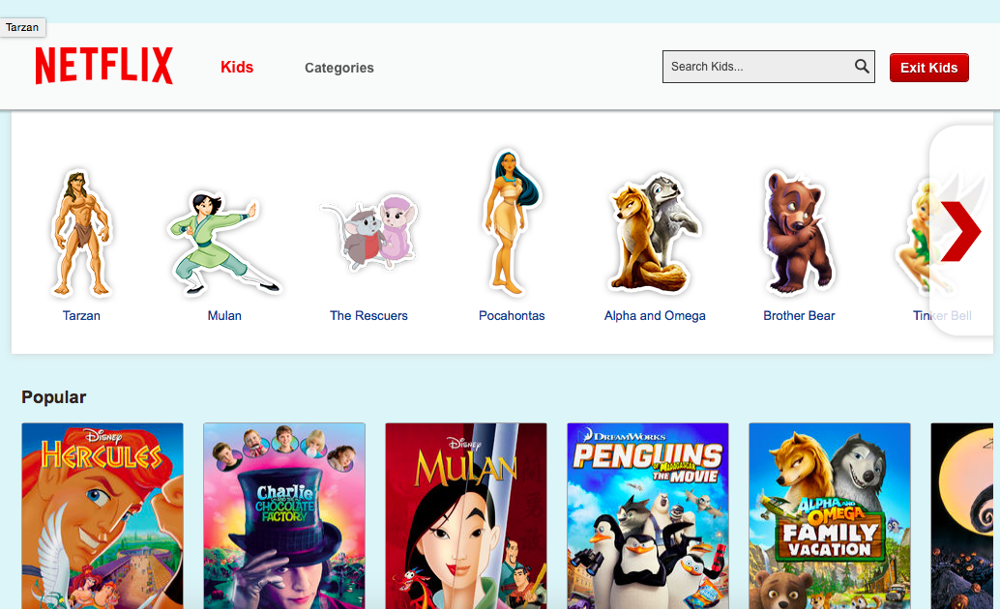
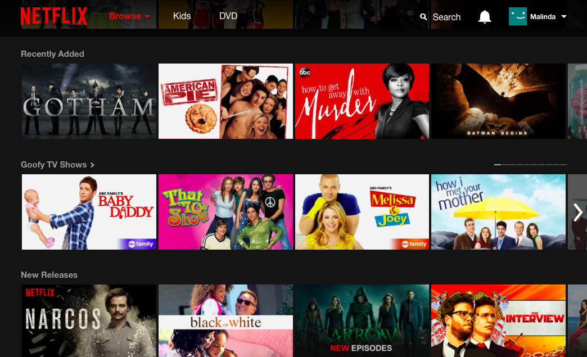
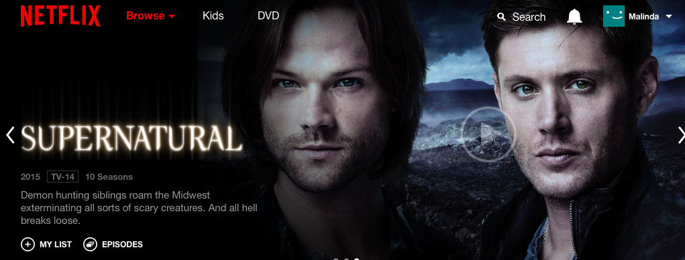
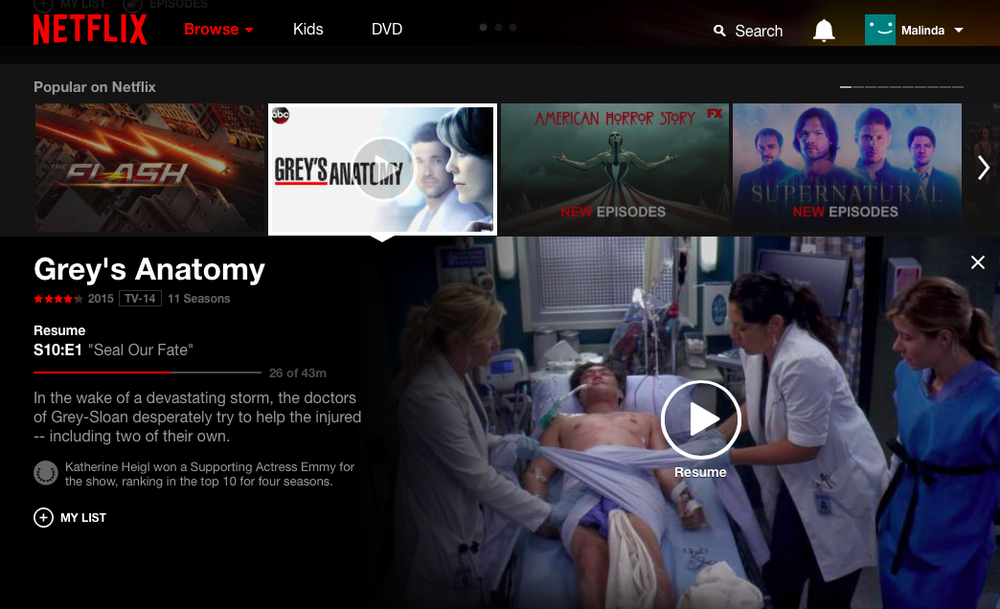
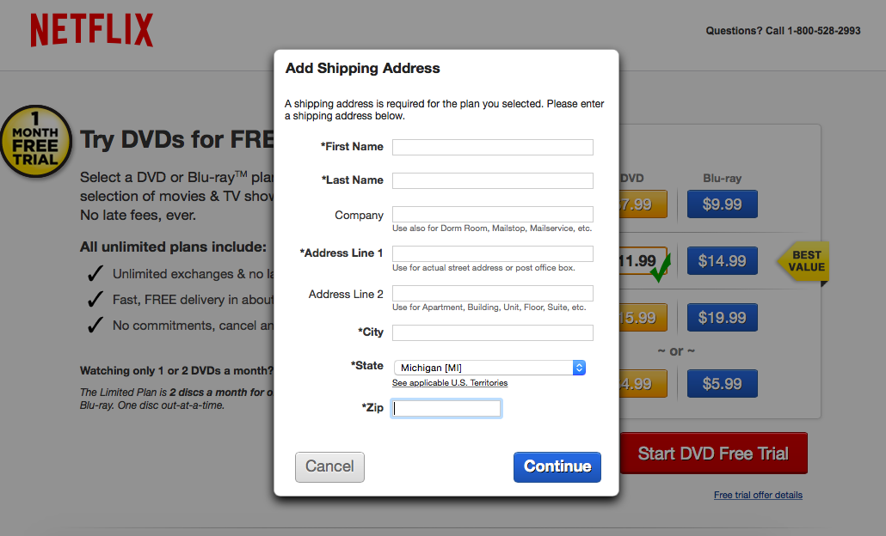

Week 3
Design Principles: Netflix
1) Affordance

Affordance is physical characteristics that influence an intended function. On this website the kids button on the webpage is designed to be pushed and afford the intended function of redirecting you to a kids friendly webpage. Which it does properly as the example shows.
2) Chunking

Chunking, is when one combines information for an easier process. This principle can also be used for grouping content for page layouts as the example above displays. The available movies are chunked under specific categories in order to make the browsing process easier and a movie's location on the website more memorable.
3) Signal-Noise Ratio

Signal-noise ratio is a design principle that is meant to keep info simple. It is a ratio of relevant and irrelevant information displayed. In this example, the website Netflix provides a simple bar at the top of its webpage reducing the irrelevant signal-noise ratio keeping only the relevant needing information available for display.
4) Rule of Thirds

Rule of thirds is a medium divided into thirds to create an aesthetically pleasing position for design. The picture above shows this principle put to use on the Netflix webpage. When you click on a movie or tv show this design is displayed with the play button sitting right on the rule of thirds line making the design more appealing and aesthetically proper by following this principle.
5) Mapping

Mapping is a design principle where the location of an object corresponds with the layout and behavior of a design. In the example above, it shows a form field designed to be filled out to add additional options to your account. This shows the relationship between controls and how the buttons effect the movement of the design such as submit or cancel. These buttons determine the movement of where the design will go to next.